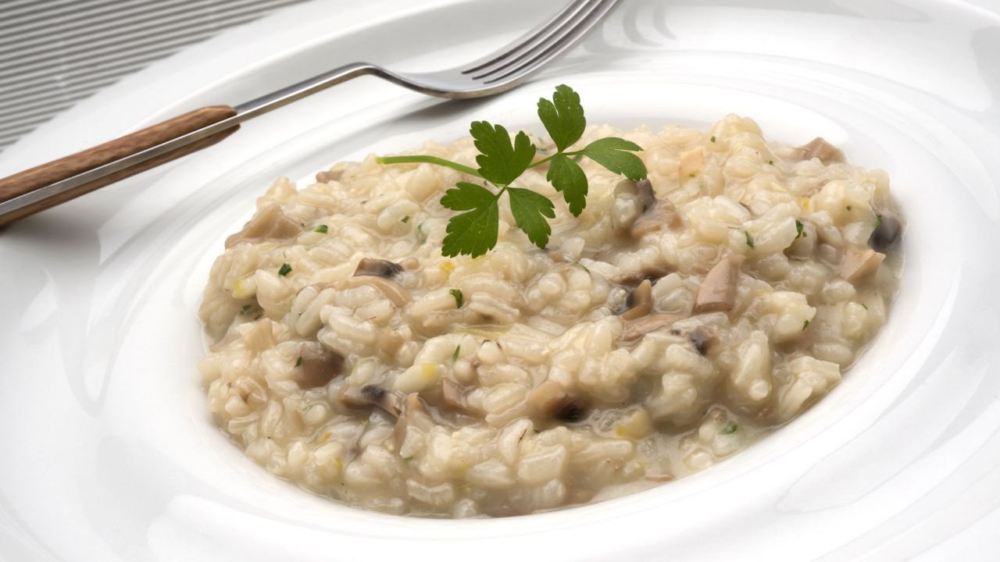

Risotto de xampinyons

Ingredients:
- Arròs, 300g
- Xampinyons laminats, 250g
- Alls, 3
- Ceba grossa, 1
- Caldo de pollastre, 1l
- Ví blanc, 250ml
- Formatge parmesà o similar, 75g
- Sal
- Pebre negre o blanc
- Oli d'oliva
Preparació:
- Rentar els xampinyons i tallar-los petitets.
- Pelar i picar els alls i la ceba (també podem ratllar-la).
- En un acassola posarem un rajolí d'oli i abocarem la ceba i els alls per que que vagin suant i es vagin daurant una mica. Després hi afegirem els xampinyons i que es vagin coent.
- Posarem el caldo de pollastre a escalfar en una olla a part (li haurem d'afegir quan estigui bullint per no tallar la cocció de l'arròs).
- Hi posarem una mica de sal i pebre i quian els xampinyons estiguin cuits hi afegirem l'arròs i ho anirem remenant 2 o 3 minuts perquè no s'enganxi a la cassola.
- Hi abocarem el ví blanc, i ho anirem remenant perquè ho vagi absorbint.
- Quan ja no hi hagi el ví anirem afegint el caldo de pollastre calent, a poc a poc amb el cullerot.
- Esperarem que ho absorbeixi i anirem afegint-ne perquè l'arròs es pugui coure. I aixì fins a posar-hi tot el calso. Si abans de treure'l del foc veiem l'arròs una mica sec podem afegir una mica més de caldo.
- Abans de treure la cassola del foc hi afegirem una cullerada de mantega i ho remenarem.
- Podem afegir un pessic del formatge ratllat perquè quedi tot més cremós.
- En servir-ho a taula cadascú pot afegir el formatge ratllat per sobre de l'arròs.
- Pobres de vosaltres que sobri algo al plat, panarres!